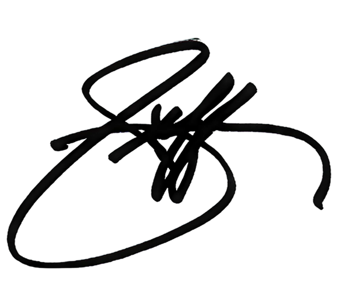

Your stack captures what happened. You still write the follow-up and prep the next call.
Here's the deal
In forty-five minutes, you build a coaching loop that runs itself.
Memory. Files that start empty and fill themselves, one per rep and per deal. Nothing resets on Monday.
Senses. Connect your calendar so context arrives on its own. No pasting.
A schedule. One automation preps every rep's day before it starts.
Proof it stuck. The loop checks whether coaching showed up on the next call, then sets one focus.
You set this up once for the team. The cheat sheet at the end has every step, and it's yours whether or not we ever talk again.
Your guide tonight
Hi, I'm Alan.
I build AI that actually works for sales teams. My background is published, peer-reviewed research in neural networks and computer vision, now pointed straight at the work your reps do every day.
5× hackathon winner at top schools
AT
hackathon photo
the build
trophy shot
HackPrinceton
team / stage
WildHacks 2026
another win
GreenChain wins
How to talk to Claude
Four moves that get Claude's best work.
🎭
Give it a role
"You're my coaching log for Jordan." Claude writes sharper when it knows who it's being.
📎
Show, don't tell
Paste a real call, not a description of one. Examples beat adjectives every single time.
🧠
Give it memory
One running file per rep, pasted back each time, so nothing resets every Monday.
🔁
Make it self-critique
"What's the weakest part of that?" then "now fix it." Two prompts, far better output.
AI, minus the jargon
Three phrases and you actually get modern AI.
Every frontier model runs on the same three. Learn them once and you can size up whatever a vendor puts in front of you.
Context windowITS MEMORYHow much it can hold at once. The best now read ~750,000 words in a single pass, a whole quarter of call notes.
ReasoningIT THINKS FIRSTIt works through a problem in steps before answering, which is why it runs circles around older AI on anything that takes real thought. Now always on.
AgenticIT DOES THE JOBIt does the task, not just answers it: plans, uses tools, checks its own work. The best now run for days and validate what they did.
You'll find all three in Claude Opus·GPT-5.6·GPT-5.5·Fable 5.
now you're the one explaining it at the next meeting.
Same follow-up, two inputs
Garbage in, garbage out.
✕
"Write my follow-up to Priya. Call went well, she liked the demo, pricing came up." No transcript, just vibes. Confident, generic, and it invents the details.
✓
"You're my deal-desk analyst. Here's the real transcript. Score the call on MEDDIC: for each letter, quote the exact moment that proves it, or mark it MISSING. Then draft the follow-up that closes the biggest gap." The real call in, the real deal out.
make it quote the transcript and it can't make things up.
Loop engineering
Four jobs. One loop. Run on every call.
Capture, an empty file per deal that Claude fills, call by call.
Coaching ledger, did last call's focus stick? Checked on every rep.
Deal scorecard, MEDDIC letter by letter, evidence quoted.
Game plan, a 60-second pre-call brief.
your prompt
Write my follow-up to Priya. Call went well, she liked the demo, pricing came up.
claude's output
Hi Priya, great connecting today! Thrilled you loved the demo. Excited about the next steps we discussed. Let me know if you have any questions!
lazytop 1%
drag it. watch the output glow up. ↑
Build yours live, one tab at a time
Sales OS · coaching workspace_▢✕
Step 1 · One paste
Create the reusable workspace and load the demo deal
The workspace is built for every deal and every rep. Cobalt Freight is simply the first populated example so the room can watch the workflow run on real files.
Set up a reusable sales-coaching workspace for all of my deals.
deals/<company-slug>/
transcripts/
deal-file.md
deal-scorecard.md
reps/<rep-slug>/coaching-log.md
game-plans/
Load Cobalt Freight as the first demo deal, create the workspace guide, verify the structure, and stop. Do not analyze the calls yet.
Step 2 · After the call
Update the deal, the coaching, and the scorecard
The filenames and company are already filled in, so Claude can execute immediately and return one clear takeaway.
Run my after-call loop on today's call with Cobalt Freight using deals/cobalt-freight/transcripts/call-2-trial-checkin-cobalt.md. Work in this exact order:
1. Append to deals/cobalt-freight/deal-file.md: date, attendees, what changed since the last call, every decision, and every commitment with an owner and date.
2. Append to reps/jordan-avila/coaching-log.md: what went well, gaps, and exactly one focus for the next call. First check whether the prior focus stuck and quote the timestamped evidence.
3. Update deals/cobalt-freight/deal-scorecard.md. For each MEDDIC letter, quote timestamped evidence or mark it MISSING. Call out what moved since call 1.
4. Do not rewrite or delete prior entries. Do not ask questions. If evidence is absent, say MISSING instead of guessing.
When all three files are saved, tell me the single most important change and stop.
Step 3 · Senses
Read the next sales call from the calendar
This uses the connected calendar and returns a fixed, presenter-friendly format instead of an open-ended summary.
Use my connected calendar to find my first external sales call tomorrow after 8:00 AM local time. Ignore personal events, focus blocks, holds, and meetings with no external attendee.
Return exactly these five lines:
Time:
Buyer:
Role:
Company:
Duration:
If the calendar connector is unavailable, say "Calendar unavailable" and stop. Do not ask me to clarify and do not invent a meeting.
Step 4 · Every weekday
Generate the pre-call brief automatically
The task has a schedule, trusted inputs, a defined output, failure behavior, and a stopping rule.
Every weekday at 7:00 AM local time, check my connected calendar for today's external sales calls. Ignore personal events, focus blocks, holds, and meetings with no external attendee.
For each sales call:
1. Match the company and rep to deals/<company-slug>/ and reps/<rep-slug>/.
2. Read that deal's deal-file.md and deal-scorecard.md plus that rep's coaching-log.md.
3. Write a 60-second brief with: one goal, three questions, one landmine, the exact opening line, and one coaching focus quoted from the log.
4. Save it to game-plans/YYYY-MM-DD-company.md. Never overwrite another company's brief.
If required context is missing, write "MISSING CONTEXT" in that brief instead of guessing. When every call has one saved brief, list the files created and stop.
The rep stops rebuilding context from scratch. The same history now powers three repeatable jobs.
RememberEvery call updates the deal file, scorecard, and coaching history.
LearnThe loop checks whether the last coaching focus showed up this time.
PrepareThe calendar and 7:00 AM task turn that history into the next-call brief.
Keep this workflow. It is yours. Now, what happens when coaching needs to happen during the call?
Sales OS11:42 AM
copy here. paste into Claude. come right back. ↑
Sales OS
WORKFLOW LIMIT REACHED
The workflow works.But you still run it.
After every call, someone still has to move the transcript, paste the prompt, and restart the loop.
GET THE TRANSCRIPTMANUAL COPYRUN THE PROMPTMANUAL PASTEDURING THE CALLMISSING: LIVE AUDIO
Claude can reason over what you feed it. It cannot capture the call, move the context, or coach the rep live.
Press → to remove the handoffs and add live support.
This is the part we built
Same loop. No files. No pasting.
BEFORE THE CALL
Cobalt · Trial check-in
11:10 AM · 30m
PREP
ChatPrep
Prep brief
Last call's focus: get thirty minutes with Marcus. Dana is your opening.
Gameplan
Tie triage-time savings to the audit
Get the Marcus meeting on the calendar
WingRep · Livenow
That's Marcus's audit worry. Ask for thirty minutes with him, now, while Dana is still on it.
she asked ✓
Talk ratio
You 38% · Them 62%
Score
8.1
Strong check-in. The Marcus ask landed on this call.
Suggested follow-ups
Send the 2-week rollout plan to Dana
CRM: Marcus meeting · Jul 24 · logged ✓
Coaching log: last call's focus stuck ✓
What lands in the rep's inbox
The prep arrives before. The debrief lands after.
Before the call · Tomorrow's game plan
Search mail
Tomorrow's game plan for Maya Chen - Tue, Jul 21
WingRep <no-reply@wingrep.ai> to Maya <maya@northstar.example>
Mon, Jul 20, 3:00 PM
Tomorrow's game plan for Maya Chen - Tue, Jul 21
Focus areas and prep to help you win tomorrow's meetings
Tomorrow's priority: Your 10:30 AM trial check-in with Alex.
Make this meeting count. Lock in clear next steps, confirm the decision process, and leave with the pilot date.
Yours in sales, Jeffrey Gitomer

Tomorrow's MEETINGSTue, Jul 21 - 2 meetings
Includes context from prior meetings and current account research to help you prepare.
Northstar Logistics - Trial check-in
Tue, Jul 21, 2026 at 10:30 AM
Who You're Meeting
Alex Rivera leads operations and owns the rollout decision. He wants faster manager reviews without another system to maintain.
Context
The team liked the coaching loop. The open question is whether a two-week rollout can work alongside the current CRM process.
Actions for This Call
Lead with manager-review time saved.
Show how the rollout works with the existing CRM.
Confirm the pilot date and success criteria.
After the call · Scored debrief
Search mail
WingRep Debrief - Northstar trial check-in
Jeffrey Gitomer <no-reply@wingrep.ai> to Maya <maya@northstar.example>
Tue, Jul 21, 11:08 AM
WingRep DebriefPRE-SALES
Northstar trial check-in
SCORE8.1/10
Coaching
Strong call. You connected the rollout to the buyer's real constraint.
You confirmed the decision process and earned a clear pilot date. Next time, leave one more beat of silence after the first objection so the buyer can finish the thought.
Yours in sales Jeffrey Gitomer
What Went Well
Mapped the rollout concern to six hours of manager-review time each week.
Repeated Alex's CRM concern before showing how the workflow fits.
Closed on a two-week pilot with a kickoff date and success criteria.
Coaching Insights
Quantify the cost one layer earlier, before the product walkthrough.
Confirm the CFO approval path while Alex is still describing the rollout.
Suggested Questions
What would make the pilot an obvious yes after two weeks?
Who besides you needs to trust the CRM workflow?
Performance
CriterionScoreExplanation
Discovery depth8.4Quantified the manager-review burden and tied it to delayed follow-through.
Qualification rigor7.6Confirmed Alex owns operations; CFO approval still needs a direct question.
Value articulation8.5Connected the workflow to faster reviews and no extra CRM maintenance.
Call control8.0Kept the discussion on rollout risk, though the first objection ran long.
Closing with next step8.1Secured the pilot, kickoff date, owners, and a measurable review point.
OVERALL SCORE8.1/10
Actions
CRM Summary
Northstar agreed to a two-week pilot for the operations team. Success means reducing weekly manager-review time from six hours to under two without adding CRM work. Alex Rivera owns the rollout; CFO approval is the remaining commercial dependency. Kickoff is Tuesday with an evidence review on August 7.
Syncing to your CRM Creating the opportunity, writing the meeting notes, and adding the pilot milestones in the background.
Sales Framework · MEDDIC
ComponentStatusCaptured
MetricsCOMPLETESix review hours weekly; pilot target is under two.
Economic BuyerPARTIALAlex owns operations; CFO approval path is not confirmed.
Decision CriteriaCOMPLETETime saved, CRM fit, rep adoption, and manager visibility.
Decision ProcessCOMPLETETwo-week pilot, then an operations review on August 7.
Identify PainCOMPLETEManual reviews delay follow-through until the next day.
ChampionPARTIALAlex will sponsor kickoff; enablement still needs alignment.
Follow-Up Email
Open follow-up in email app
To: alex@northstar.exampleSubject: Northstar pilot kickoff and success criteria
Hi Alex,
Thanks for working through the rollout details today. We aligned on a two-week pilot for the operations team, starting Tuesday.
We will measure one thing first: reducing weekly manager-review time from six hours to under two without adding CRM work. I will send the rollout outline today and include the enablement lead on the kickoff.
For our August 7 review, we will bring adoption, time-saved, and follow-through data so the team can decide from evidence.
Best, Maya
Action Items
Send Alex the rollout outline today.
Invite the enablement lead to Tuesday's kickoff.
Confirm the CFO approval path before the evidence review.
Track adoption, manager time saved, and follow-through speed.
How to start
Run it on real calls for three weeks.
Start with a few reps. If you're on Google Workspace, setup takes about twenty minutes.
WEEK 01Connect a few reps.Start with one team and the calls they already run.
WEEK 02Let the loop run.Prep before, support during, follow-through after.
WEEK 03Hate to see it go away.Now try taking it back off your reps. That's the actual test.
Teams leveling up with WingRep
Why another call tool?
Most tools remember the call.WingRep changes the next one.
The ones you already pay for
GongOtterFirefliesFathom
They record the call, transcribe it, summarize it. Then they hand the rep one more thing to read, and the next call sounds exactly like the last one.
What WingRep does instead
1Writes the CRM in your team's framework, three minutes after the call.
2Drafts the follow-up. Reps at Rho send it unedited nine times out of ten.
Grades whether last call's coaching showed up on this one.
Either way
The loop is yours.
Four prompts. Capture, ledger, scorecard, game plan.
Four prompting moves. Role, example, memory, self-critique.
One coaching rhythm. Coach, check, adjust.
Run it yourself tonight, or let WingRep run it on every call.
One rep · one pile · no automation
Try to keep up. Manually.
Cleared: 0Piled up: 00:18
The manual challenge
Click every admin task before it piles up.
Follow-ups, CRM notes, next steps, manager updates. The work keeps arriving while the rep is trying to sell.
Clicks cannot keep pace.WingRep is taking over the workload.
Work handled. Rep ready.
Follow-ups, CRM updates, and coaching actions are taken care of automatically, giving the rep time back to sell and a stronger next call.
AdminTaken care of
Rep timeBack to selling
Next callBetter prepared
18 seconds · click the tasks
For the teams who showed up today
Build yours with Alan.
A free 30-minute working session with Alan to turn today's framework into your own sales assistant. Bring your workflow and stack; you'll leave with a practical build plan plus hands-on help getting WingRep set up for your real calls.
Today's setup slots are taken. You can still book the next available time with Alan on Calendly.
Take the workflow. Or let WingRep run it.
The SalesOS workflow is yours, no strings. If you want hands-on help building it around your calls and getting WingRep set up, book a session with Alan.